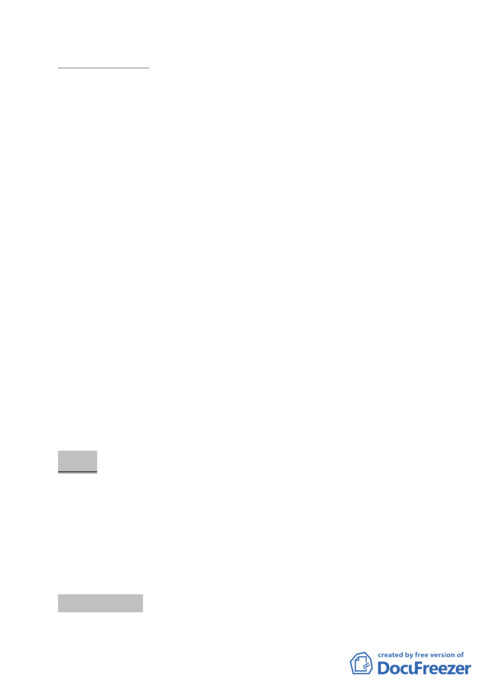

案情概要說明：
一、本更新單元位於北投區東華街一段以東、明德路 113 巷 3 弄
以北、建民路 151 巷以西、及東華路一段 400 巷以南所圍街
廓內，包含明德路 113 巷 3 弄的部份計畫道路用地，計畫面
積 1,448 平方公尺。
二、本案更新單元土地使用分區為第三種住宅區，更新單元現況
除東華街一段 378 號一樓為零售業，其餘皆作為住宅使用。
東南側的明德路 113 巷 3 弄因臨東華街一段路口處有違章佔
用，以致無法開闢通行。單元內現有 7 棟建物，包括 6 棟 2
層樓加強磚造與 1 棟 4 層樓鋼筋混凝土建物，屋齡皆逾 35
年。
三、本件係市府以 98 年 7 月 3 日府都新字第 09830446500 號函
送到會。
四、申請單位：億擎建設有限公司。
五、辦理單位：臺北市政府。
六、法令依據：都市計畫法第 66 條、都市更新條例第 5 條、第 6
條、第 8 條、第 11 條及臺北市都市更新自治條例第 15 條。
七、本更新單元劃定業經市府審查符合「臺北市都市更新自治條
例」劃定基準及環境評估標準。
決議：
一、本案更新單元劃定範圍照案通過。
二、本案「規劃構想圖」中所標示「開放空間」之留設位置，建
議改配置於基地西北角並臨接東華路側，以確保其公益性與
開放性。
討論事項 十八
- 23 -